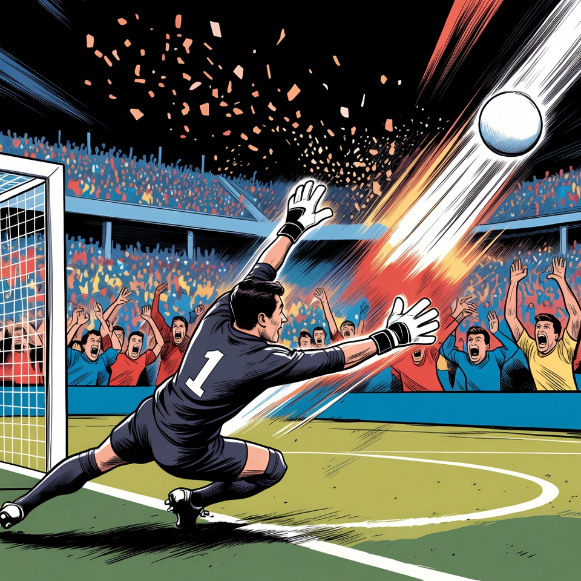
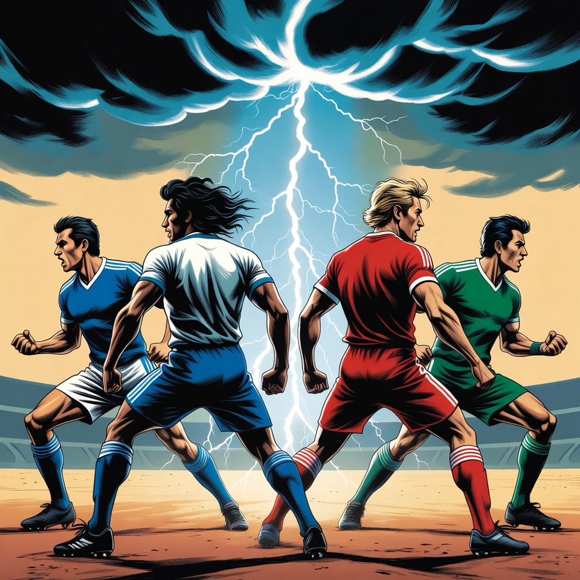
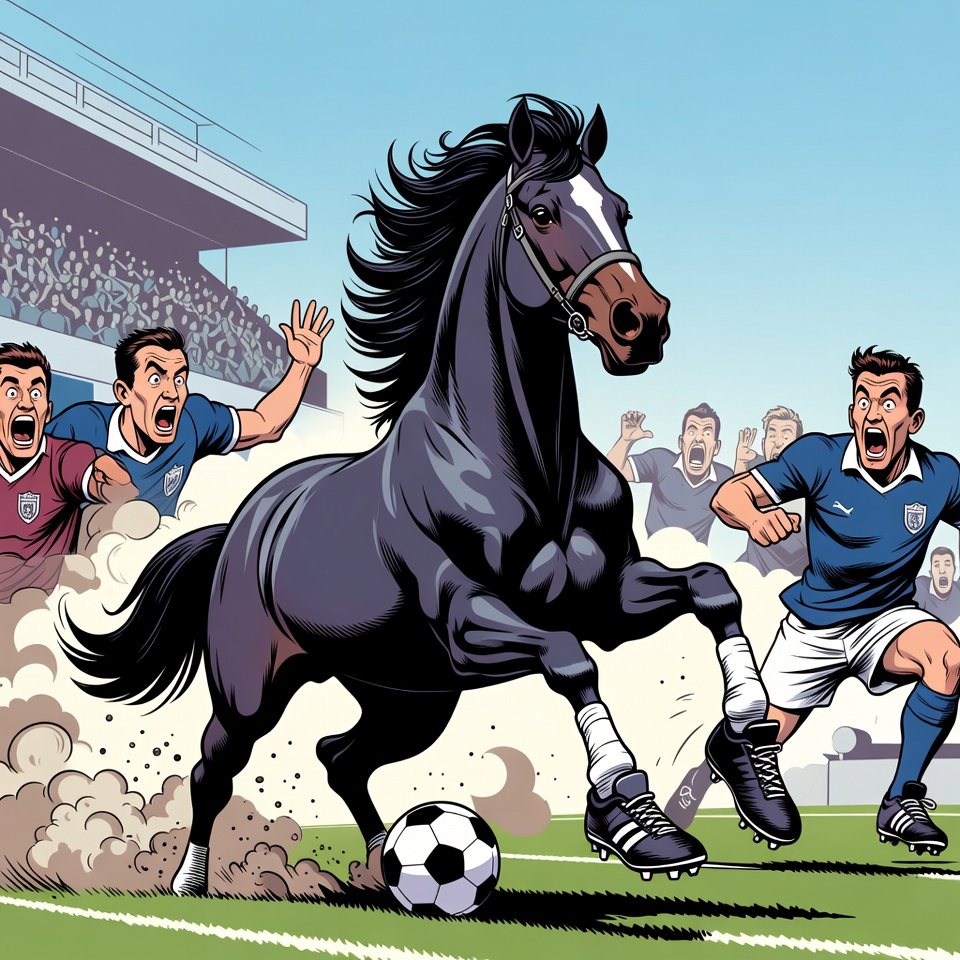

With Bosnia and Herzegovina's dramatic penalty shootout victory over Italy and Iraq's hard-fought 2-1 win against Bolivia, the full roster of 48 nations heading to North America this summer is finally complete. Italy's absence for a third consecutive World Cup is arguably the biggest shock, while Iraq returns to the global stage for the first time since 1986.
The expanded format means 12 groups of 4, with the top 2 from each group plus the 8 best third-placed teams advancing to a new Round of 32. That's 32 out of 48 teams making the knockout stage — roughly 67% of participants — making every group game meaningful but the margin for error wider than ever before.
DR Congo became only the second team from their nation to qualify (after Zaire in 1974), while Curaçao will be the smallest country ever to appear at a World Cup. Sweden returns after missing Qatar 2022, and Türkiye is back for the first time since their remarkable third-place finish in 2002.
AnalysisQualifying
France, Senegal, Norway, and Iraq. On paper, Group I has all the ingredients for drama. The defending runners-up France bring Mbappé and a squad loaded with Premier League talent. But Senegal showed in 2002 what they can do against France in a World Cup opener, winning 1-0 in one of the tournament's all-time shocks.
Norway's Erling Haaland leads his country to their first World Cup since 1998. With arguably the best striker on the planet, any group game could turn on a single moment of brilliance. And Iraq, fresh from overcoming war-zone logistics just to reach Mexico for the playoffs, brings the kind of underdog narrative that World Cups are made of.
The beauty of the new format is that third place could still be enough to advance. But in a group this stacked, even picking up a single point could be a battle. France vs Norway on June 26 in Boston could be the de facto group decider — and one of the matches of the tournament.
Group PreviewFranceNorway
Türkiye: Back at the World Cup for the first time since their legendary 2002 run where they finished third. Drawn in Group D with hosts USA, Paraguay, and Australia, they have the talent and the tournament pedigree to make noise. Their qualifying playoff win over Kosovo showed a team that knows how to perform under pressure.
Morocco: Semi-finalists in Qatar 2022, Morocco proved that wasn't a fluke with a dominant qualifying campaign. In Group C with Brazil, Haiti, and Scotland, they could realistically finish top of the group. Their defensive organization under Walid Regragui remains elite.
Japan: The first team to qualify for 2026 and arguably Asia's strongest ever generation. Group F with Netherlands, Sweden, and Tunisia is tricky but navigable. Their 2022 victories over Germany and Spain showed they can beat anyone on their day.
Colombia: A team on the rise with a blend of youth and experience. Group K with Portugal, DR Congo, and Uzbekistan offers a genuine path to the knockout stages, and their recent form suggests they could go deep.
USA: Home advantage is real. Playing all group games on the West Coast (Los Angeles, Seattle, San Francisco) with massive crowd support, Pochettino's squad has the depth and the motivation to make a statement. The question is whether they can handle the pressure of being hosts.
Dark HorsesPredictionsThe first-ever tri-nation World Cup spans 16 cities across Mexico, the United States, and Canada. Here's a quick guide to what fans can expect at each venue.
Mexico (3 cities): Mexico City's Estadio Azteca hosts the opening match — Mexico vs South Africa on June 11, recreating the 2010 World Cup opener. Guadalajara's Estadio Akron and Monterrey's Estadio BBVA complete Mexico's venues, with all three cities offering incredible food culture and passionate atmospheres.
USA (11 cities): From SoFi Stadium in Los Angeles to MetLife Stadium in New Jersey (hosting the Final on July 19), the American venues are spread coast to coast. Dallas's AT&T Stadium hosts the most matches of any venue with 9 games. Atlanta, Houston, and Miami offer retractable-roof stadiums with climate control — crucial for summer matches.
Canada (2 cities): Toronto's BMO Field (expanded to 45,500 for the tournament) and Vancouver's BC Place give Canada its first taste of World Cup hosting. Both cities are known for their multicultural populations, meaning every team will feel some home support.
Key logistical tip: flights between host cities can be long. Mexico City to Boston is over 5 hours. Plan your itinerary around geographic clusters if you're attending multiple games.
VenuesTravel GuideFor the first time since 1998, the World Cup format has changed. The expansion from 32 to 48 teams brings sweeping structural changes that will fundamentally alter how the tournament plays out.
The group stage now has 12 groups of 4 teams instead of 8. Each team still plays 3 matches, but the advancement rules are more generous: the top 2 from each group qualify automatically (24 teams), plus the 8 best third-placed teams. That means 32 of 48 teams advance — a survival rate of 67% compared to 50% in the old format.
This changes the dynamics of the final group game significantly. In the old format, a team with 0 points after 2 games was essentially eliminated. In the new format, a single win in the third game could be enough to sneak through as a best third-placed team. Expect fewer dead rubbers and more do-or-die drama.
The knockout stage adds a Round of 32 before the traditional Round of 16, meaning the eventual champion must win 8 matches instead of 7. The tournament runs 39 days (June 11 to July 19), a week longer than previous editions. Total matches jump from 64 to 104.
Critics argue the expansion dilutes quality. Supporters say it gives more nations a chance to experience the World Cup. The truth will play out on the pitch starting June 11 at the Azteca.
FormatAnalysis